방송 뉴스
썸네일을 누르면 이 자리에서 재생됩니다. 영상의 저작권은 각 방송사에 있습니다.
올바른농지 숏폼 · 블로그
 블로그블로그 · 2026.10.05올바른농지,2027년 농지 조사 예고 — 1996년 이전에 받은 농지, 미리 준비할 것
블로그블로그 · 2026.10.05올바른농지,2027년 농지 조사 예고 — 1996년 이전에 받은 농지, 미리 준비할 것 블로그블로그 · 2026.10.05올바른농지,나이 들어 농사가 힘들 때, 내 농지는? — 고령 농업인 임대 예외와 농지연금
블로그블로그 · 2026.10.05올바른농지,나이 들어 농사가 힘들 때, 내 농지는? — 고령 농업인 임대 예외와 농지연금 블로그블로그 · 2026.10.05올바른농지,영농 기록 남기는 법 — 일지·사진·영수증, 이렇게 모으세요
블로그블로그 · 2026.10.05올바른농지,영농 기록 남기는 법 — 일지·사진·영수증, 이렇게 모으세요 블로그블로그 · 2026.10.05올바른농지,처분의무 통지서를 받았다면 — 첫 1주일에 할 일 다섯 가지
블로그블로그 · 2026.10.05올바른농지,처분의무 통지서를 받았다면 — 첫 1주일에 할 일 다섯 가지 블로그블로그 · 2026.10.05올바른농지,농막과 농촌체류형 쉼터, 되는 것과 안 되는 것 — 20㎡와 33㎡의 차이
블로그블로그 · 2026.10.05올바른농지,농막과 농촌체류형 쉼터, 되는 것과 안 되는 것 — 20㎡와 33㎡의 차이 블로그블로그 · 2026.10.05올바른농지,농업경영체 등록, 농지대장과 왜 맞아야 할까? — 서류끼리 말이 다르면 생기는 일
블로그블로그 · 2026.10.05올바른농지,농업경영체 등록, 농지대장과 왜 맞아야 할까? — 서류끼리 말이 다르면 생기는 일 블로그블로그 · 2026.10.05올바른농지,경매로 산 농지, 전수조사에서 먼저 봅니다 — 농취증 다음에 할 일
블로그블로그 · 2026.10.05올바른농지,경매로 산 농지, 전수조사에서 먼저 봅니다 — 농취증 다음에 할 일 블로그블로그 · 2026.10.05올바른농지,형제가 함께 가진 농지, 공유 지분이면 더 꼼꼼히 — 과반 동의가 열쇠입니다
블로그블로그 · 2026.10.05올바른농지,형제가 함께 가진 농지, 공유 지분이면 더 꼼꼼히 — 과반 동의가 열쇠입니다 블로그블로그 · 2026.10.05올바른농지,주말농장 하려고 산 땅도 조사 대상일까? — 주말·체험영농 1,000㎡의 규칙
블로그블로그 · 2026.10.05올바른농지,주말농장 하려고 산 땅도 조사 대상일까? — 주말·체험영농 1,000㎡의 규칙 블로그블로그 · 2026.10.05올바른농지,농지은행에 농지 맡기는 법 — 임대수탁, 누가·어떻게·얼마나?
블로그블로그 · 2026.10.05올바른농지,농지은행에 농지 맡기는 법 — 임대수탁, 누가·어떻게·얼마나? 블로그블로그 · 2026.10.04올바른농지,농지전수조사 대응 체크리스트 총정리 — 20편의 핵심을 한 번에
블로그블로그 · 2026.10.04올바른농지,농지전수조사 대응 체크리스트 총정리 — 20편의 핵심을 한 번에 블로그블로그 · 2026.10.04올바른농지,상담은 이렇게 진행됩니다 — 카카오톡 한 줄에서 경작 기록까지
블로그블로그 · 2026.10.04올바른농지,상담은 이렇게 진행됩니다 — 카카오톡 한 줄에서 경작 기록까지 블로그블로그 · 2026.10.04땅을 가르치던 교수가 농지 곁에 선 이유 — 올바른농지 이주왕 대표
블로그블로그 · 2026.10.04땅을 가르치던 교수가 농지 곁에 선 이유 — 올바른농지 이주왕 대표 블로그블로그 · 2026.10.04올바른농지는 어떤 회사인가요? 하는 일과 하지 않는 일
블로그블로그 · 2026.10.04올바른농지는 어떤 회사인가요? 하는 일과 하지 않는 일 블로그블로그 · 2026.10.04올바른농지,농지전수조사 오해 5가지 — "의심이면 바로 처벌?" 아닙니다
블로그블로그 · 2026.10.04올바른농지,농지전수조사 오해 5가지 — "의심이면 바로 처벌?" 아닙니다 블로그블로그 · 2026.10.04풀숲이던 밭이 다시 농지가 되기까지 — 올바른농지 현장 기록
블로그블로그 · 2026.10.04풀숲이던 밭이 다시 농지가 되기까지 — 올바른농지 현장 기록 블로그블로그 · 2026.10.04올바른농지,농지 거래 절벽, 지금 팔아야 할까 — 통계로 본 현장과 세 가지 길
블로그블로그 · 2026.10.04올바른농지,농지 거래 절벽, 지금 팔아야 할까 — 통계로 본 현장과 세 가지 길 블로그블로그 · 2026.10.04농지대장 한 장으로 하는 5분 자가 점검 — 발급부터 확인할 칸까지
블로그블로그 · 2026.10.04농지대장 한 장으로 하는 5분 자가 점검 — 발급부터 확인할 칸까지 블로그블로그 · 2026.10.04농지 위 창고·컨테이너, 불법 전용 양성화 길이 열린다? — 정부 추진안 정리
블로그블로그 · 2026.10.04농지 위 창고·컨테이너, 불법 전용 양성화 길이 열린다? — 정부 추진안 정리 블로그블로그 · 2026.10.04서울 살면서 지방 농지 가진 분들께 — 1년에 몇 번 가 보셨나요?
블로그블로그 · 2026.10.04서울 살면서 지방 농지 가진 분들께 — 1년에 몇 번 가 보셨나요? 블로그블로그 · 2026.10.01풀만 무성한 밭, 무단 휴경일까? 항공사진은 3년을 봅니다
블로그블로그 · 2026.10.01풀만 무성한 밭, 무단 휴경일까? 항공사진은 3년을 봅니다 블로그블로그 · 2026.10.01동네 분께 맡겨 둔 농지, 불법 임대차일 수 있습니다 — 11월 15일까지 특별정비기간
블로그블로그 · 2026.10.01동네 분께 맡겨 둔 농지, 불법 임대차일 수 있습니다 — 11월 15일까지 특별정비기간 블로그블로그 · 2026.10.01부모님께 물려받은 논밭, 상속 농지도 농지전수조사 대상입니다
블로그블로그 · 2026.10.01부모님께 물려받은 논밭, 상속 농지도 농지전수조사 대상입니다 블로그블로그 · 2026.10.01처분명령 유예 3년 — 이 기회는 처분명령 '전'까지만 있습니다
블로그블로그 · 2026.10.01처분명령 유예 3년 — 이 기회는 처분명령 '전'까지만 있습니다 블로그블로그 · 2026.10.01농지 이행강제금 25%, 1억 농지면 얼마? 직접 계산해 봤습니다
블로그블로그 · 2026.10.01농지 이행강제금 25%, 1억 농지면 얼마? 직접 계산해 봤습니다 블로그블로그 · 2026.10.01농지 처분명령까지 5단계 — 지금 내 농지는 어디쯤일까?
블로그블로그 · 2026.10.01농지 처분명령까지 5단계 — 지금 내 농지는 어디쯤일까? 블로그블로그 · 2026.10.01농지 심층조사 10대 위험군 — 조사원이 다녀가도 모를 수 있습니다
블로그블로그 · 2026.10.01농지 심층조사 10대 위험군 — 조사원이 다녀가도 모를 수 있습니다 블로그블로그 · 2026.10.01농지전수조사 대상 총정리 — 매매·상속·증여·경매, 받은 방법은 가리지 않습니다
블로그블로그 · 2026.10.01농지전수조사 대상 총정리 — 매매·상속·증여·경매, 받은 방법은 가리지 않습니다 블로그블로그 · 2026.10.01숫자로 보는 농지전수조사 현황 — 1,049만 필지 중 27%가 '위반 의심'
블로그블로그 · 2026.10.01숫자로 보는 농지전수조사 현황 — 1,049만 필지 중 27%가 '위반 의심' 블로그블로그 · 2026.10.01농지전수조사 시작, 내 땅도 대상일까? 1996년 이후 받은 농지라면 꼭 보세요블로그블로그 · 2026.09.30상속 농지도 전수조사 대상일까? 처분 대상 여부와 지금 할 일
블로그블로그 · 2026.10.01농지전수조사 시작, 내 땅도 대상일까? 1996년 이후 받은 농지라면 꼭 보세요블로그블로그 · 2026.09.30상속 농지도 전수조사 대상일까? 처분 대상 여부와 지금 할 일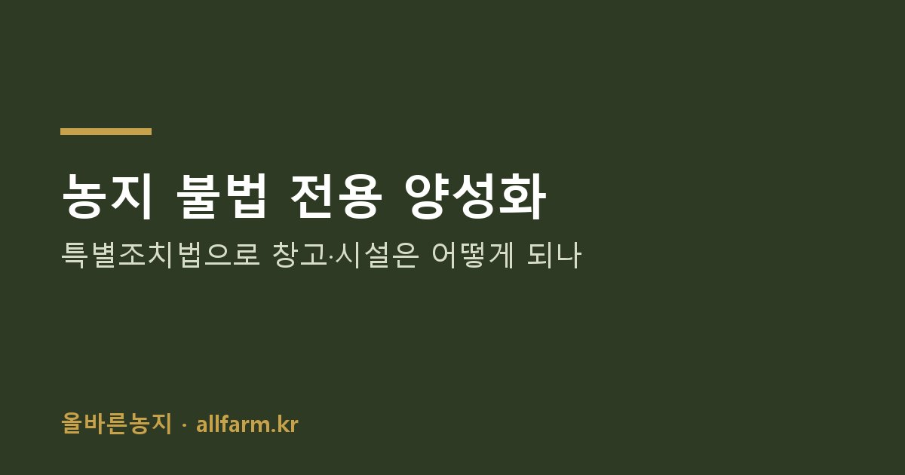
블로그블로그 · 2026.09.30농지 불법 전용 양성화 — 특별조치법으로 창고·시설은 어떻게 되나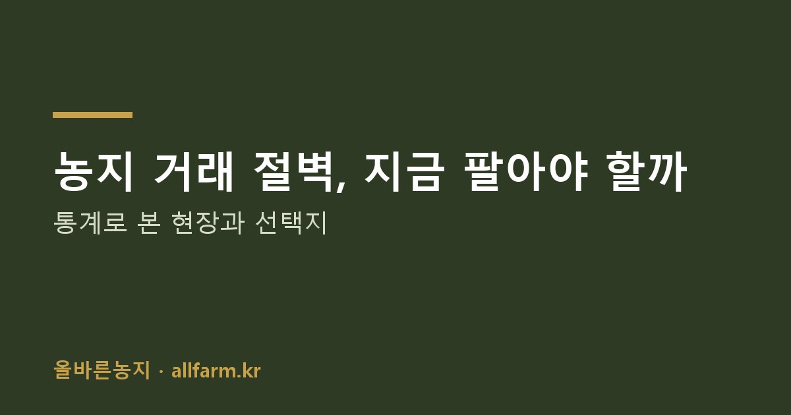
블로그블로그 · 2026.09.30농지 거래 절벽, 지금 팔아야 할까 — 통계로 본 현장과 선택지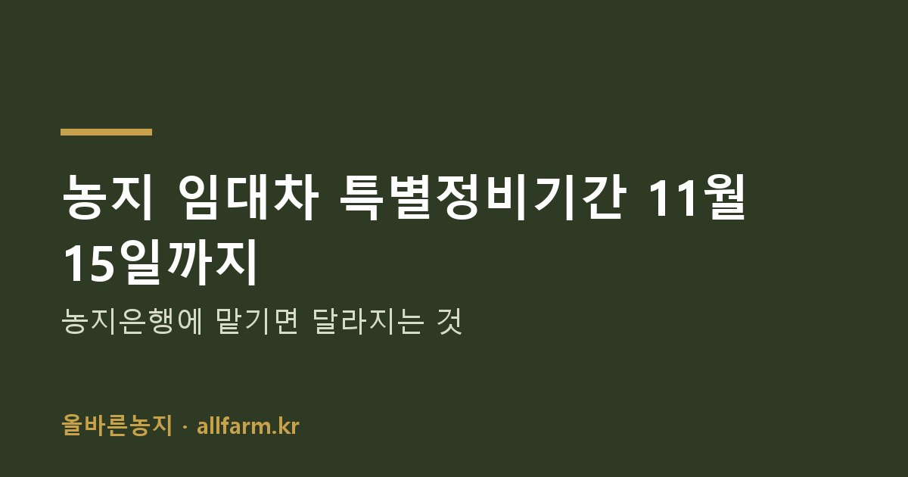
블로그블로그 · 2026.09.30농지 임대차 특별정비기간 11월 15일까지 — 농지은행에 맡기면 달라지는 것블로그블로그 · 2026.09.30농지 무단 휴경 기준과 정당한 휴경 사유 — 고령·질병·맹지라면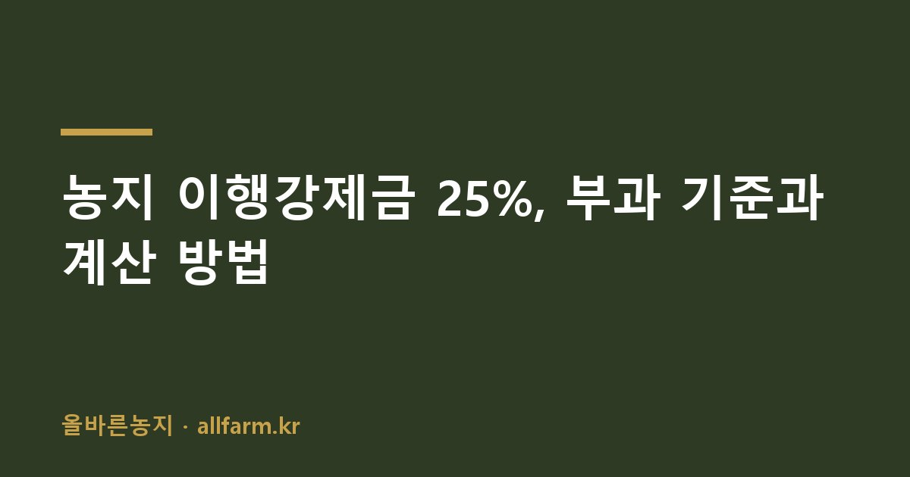
블로그블로그 · 2026.09.30농지 이행강제금 25%, 부과 기준과 계산 방법블로그블로그 · 2026.09.30농지 처분의무 통지를 받았다면 — 처분명령 절차와 유예 제도블로그블로그 · 2026.09.30농지 심층조사 10대 위험군 — 내 농지가 해당되는지 확인하는 법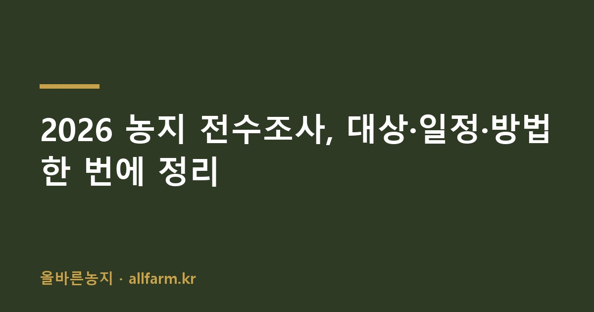
블로그블로그 · 2026.09.302026 농지 전수조사, 대상·일정·방법 한 번에 정리기사
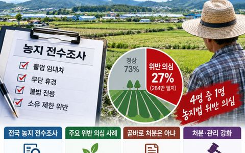
뉴스에듀신문 · 2026.09.14농지 전수조사 '4명 중 1명 농지법 위반 추정'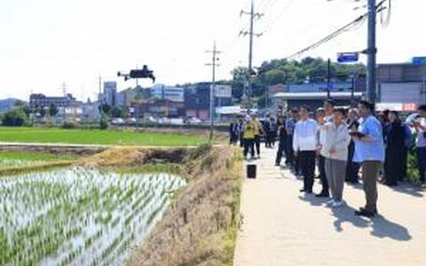
팜인사이트 · 2026.07.31농지 전수조사 결과 27% "위반 의심"…8월부터 심층조사 돌입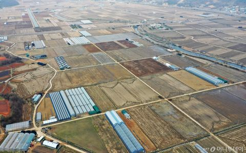
머니투데이 · 2026.07.30농지 전수조사 27%서 위법 의심…내달부터 심층조사 착수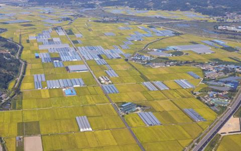
뉴스핌 · 2026.07.30농지 전수조사 대상 27% '위반 의심'…내달부터 심층조사 착수대한민국 정책브리핑대한민국 정책브리핑 · 2026.07.30농지 전수조사 진행상황 및 향후 계획 발표 (농식품부 브리핑)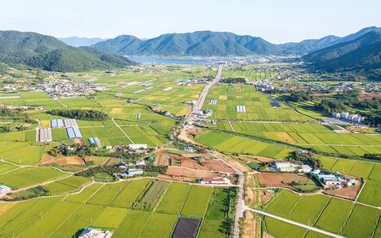
농민신문 · 2026.07.22농지 절반 이상 '8월 심층조사' 대상…처분명령 논밭 쏟아지면 거래 위축 가속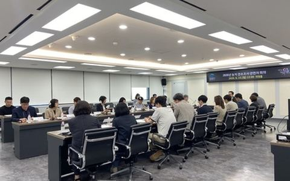
사회적경제뉴스 · 2026.06.17의정부시 '2026년 농지 전수조사 관련자 회의' 개최법률신문법률신문 · 2026.06.09농지법 개정 및 농지 전수조사 실시에 따른 대응방안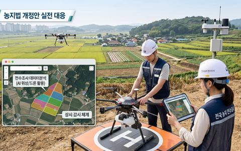
한국경제 · 2026.05.22사상 첫 전국 농지 전수조사…이제 농지는 '보유'보다 '관리'가 중요해졌다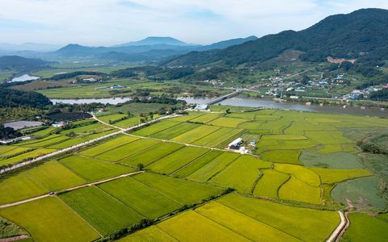
농민신문 · 2026.05.21헌정 사상 최초 농지 전수조사 착수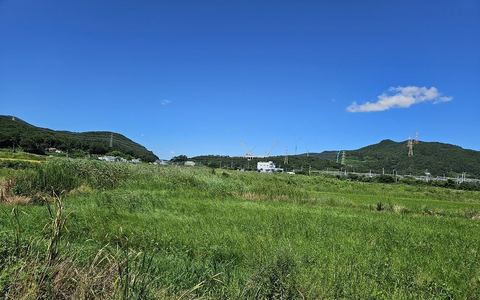
파이낸셜뉴스 · 2026.05.17첫 전국 농지 전수조사, 내일부터 착수…위성·AI·드론 활용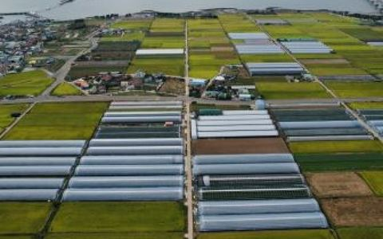
아시아경제 · 2026.05.17농지 전수조사 본격시작…'AI·위성·드론' 총동원농업인신문농업인신문 · 2026.05.15'농지 전수조사' 본격화…투기 차단·실경작 중심 '농지 개혁'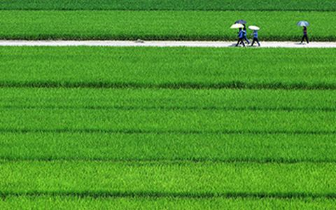
대한민국 정책브리핑 · 2026.05.08농지 투기·규제 회피 막는다…처분명령 강화 '농지법' 개정안 통과네이트뉴스 · 2026.04.01"투기 걸리면 즉각 처분"…사상 첫 농지 전수조사기사 제목·이미지의 저작권은 각 언론사에 있으며, 원문 링크 안내 목적으로만 표시합니다.
이야기는
전화로 이어가요.
농지 위치와 지금 상황을 편하게 남겨 주세요. 대표가 직접 확인하고 연락드립니다. 첫 상담은 무료이며, 비용은 범위를 확인하고 동의하신 뒤에만 발생합니다.
- 전화 상담 · 평일 09:00 ~ 18:00010-2529-2998